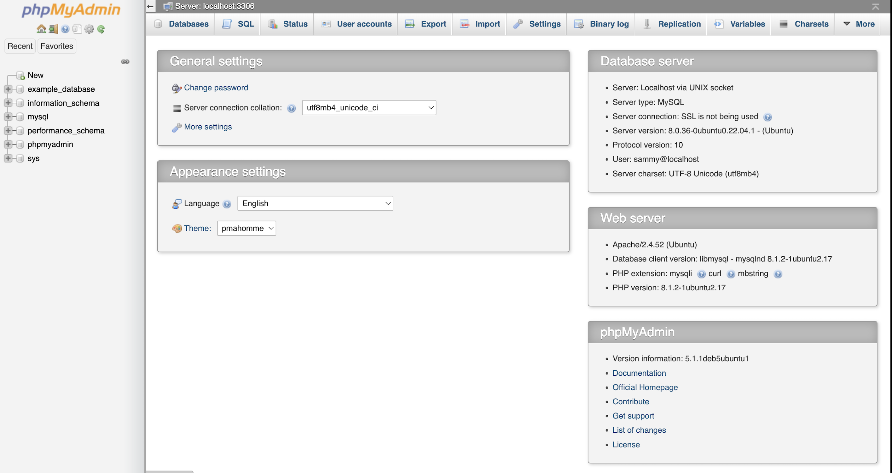
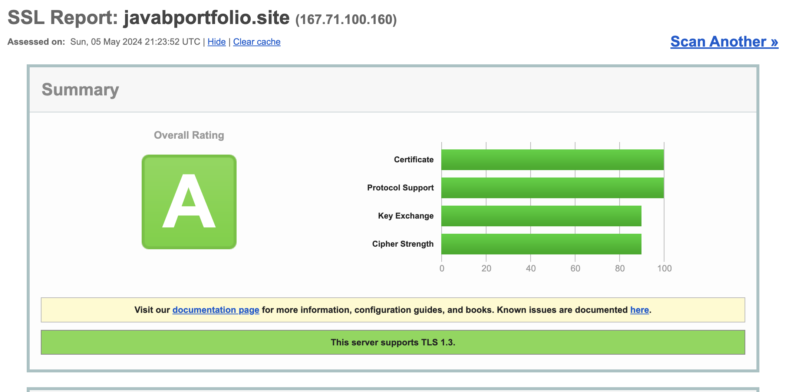

blog-3
Comprehensive Guide to Setting Up Your Ubuntu Server and Installing Apache
Introduction
Setting up an Ubuntu server correctly and installing Apache are foundational steps for hosting web applications. In this guide, we'll walk you through the initial server setup on Ubuntu, installing the Apache web server, and further securing your server with a LAMP stack and Let's Encrypt SSL certificates. We'll also touch on how to configure your domain, purchased from Namecheap, and set up other essential services and applications like WordPress and phpMyAdmin.
Part 1: Initial Server Setup with Ubuntu
Before you dive into the world of web hosting, the initial setup of your Ubuntu server is crucial. Here's how to start:
- Logging in as Root: Access your server with the root credentials to begin the setup.
- Creating a New User: For security reasons, it's best to operate not as root but through a new user with administrative privileges.
- Granting Administrative Privileges: Enable sudo access for the new user to run tasks requiring administrative privileges.
- Setting Up a Basic Firewall: UFW (Uncomplicated Firewall) is simple to set up and highly effective.
- Enabling External Access for Regular User: Ensure that your new user can SSH into the server without restrictions.
Part 2: How To Install the Apache Web Server on Ubuntu
Apache is a powerful and versatile web server that is an excellent choice for hosting web applications:
- Installing Apache: Use the package manager to install Apache.
- Adjusting the Firewall: Configure UFW to allow traffic on port 80 and 443.
- Checking Your Web Server: Verify that Apache is running and accessible.
- Managing the Apache Process: Learn how to start, stop, and reload Apache configurations.
- Setting Up Virtual Hosts: Configure Apache to host multiple domains from a single server.
Part 3: How To Install Linux, Apache, MySQL, PHP (LAMP) Stack on Ubuntu
A LAMP stack is a set of open-source software that provides a robust platform for developing and deploying web applications:
- Install Apache & Update Firewall: Reconfirm that Apache and firewall settings are correctly configured.
- Install MySQL: Set up MySQL and secure your database.
- Install PHP: Ensure PHP is installed and configured to interact with Apache and MySQL.
- Setup Virtual Webhost: Configure Apache to serve your domain using virtual hosts.
- Test PHP Processing & Database Connection: Validate that your server processes PHP files and connects to MySQL successfully.

Part 4: How To Secure Apache with Let's Encrypt on Ubuntu 20.04
Securing your web server is critical to protect data and improve trust with your users:
- Installing Certbot: Use Certbot from Let's Encrypt to install and manage SSL certificates.
- Configuring Apache for HTTPS: Set up and test your virtual hosts to work with HTTPS.
- Obtaining an SSL Certificate: Automatically configure SSL for your domains using Certbot.
- Renewing SSL Certificates: Ensure your SSL certificates are set to renew automatically.

Additional Configurations
After securing your server and setting up the basic stack, you should also:
- Configure DNS: Set up DNS records for your domain, which you purchased from Namecheap, to point to your server’s IP address.
- Install phpMyAdmin: This tool simplifies database management via a web interface.
- Install WordPress: Use the famous 5-minute install to get WordPress up and running.
- Develop a Landing Page: Customize your WordPress homepage to make it visually appealing and functional.
Conclusion
By following this guide, you've set a strong foundation for your web server using Ubuntu, Apache, and secure SSL configurations. You're now equipped to host your applications securely and efficiently, with all tools necessary to manage content and databases effectively.